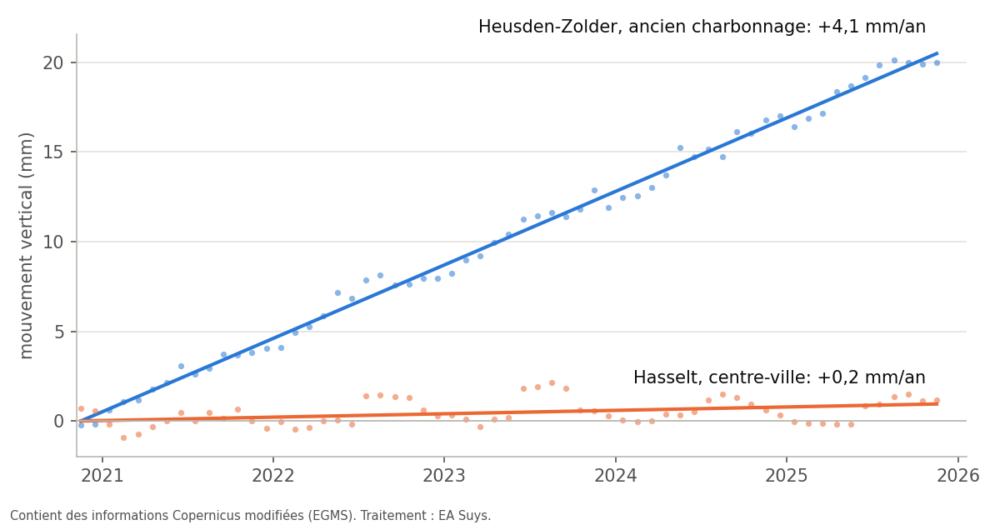

Votre bâtiment bouge-t-il ? Les satellites le mesurent depuis 2020
Des fissures dans une façade, des travaux chez le voisin, un ancien tassement dans une église : la même question revient chaque fois. Quelque chose bouge-t-il maintenant, ou s'agit-il d'un dommage ancien ? Les mesures satellitaires européennes permettent souvent d'y répondre, avant même qu'un repère de nivellement soit posé.
Des millimètres vus de l'espace
Les satellites Sentinel-1 du programme européen Copernicus balaient l'Europe au radar toutes les une à deux semaines. L'European Ground Motion Service (EGMS) transforme ces images en séries temporelles : pour des millions de points fixes, comme des toitures, des façades et des revêtements, il indique de combien ils ont bougé depuis décembre 2020, au millimètre près.
Nous sélectionnons les points sur le bâtiment et autour de lui, combinons les images prises sous différents angles de vue en un mouvement vertical, et comparons le bâtiment à sa rue et à ses environs. C'est cette différence qui compte : un quartier entier qui s'enfonce ou se soulève uniformément n'affecte guère un bâtiment. Un bâtiment qui bouge autrement que ses voisins mérite de l'attention.
Un exemple : le bassin houiller limbourgeois
Depuis la fermeture des charbonnages, l'eau des mines n'est plus pompée. Elle remonte et le sol se soulève avec elle. Le phénomène est bien documenté par la recherche scientifique (Declercq et al., 2023), ce qui en fait un bon test pour notre analyse.
- Heusden-Zolder, ancien charbonnage : le sol monte d'environ 4 mm par an, soit quelque 2 cm en cinq ans, de façon régulière.
- Beringen, Maasmechelen et Genk (C-Mine) : 2 à 3 mm par an.
- Centre de Hasselt, au sud du bassin houiller : 0,2 mm par an, pratiquement stable.
Les mesures prises sous différents angles de vue donnent la même image, et la tendance concorde avec la recherche publiée.

Ce que les mesures montrent, et ce qu'elles ne montrent pas
- Par rue ou par grand bâtiment : une maison mitoyenne ne reçoit en général qu'une poignée de points de mesure. Un tronçon de rue de 50 m en compte facilement 50 ou plus, une église ou un hall plusieurs dizaines. La réponse fiable se situe donc au niveau de la rue ou d'un grand bâtiment.
- Précision : nous connaissons la tendance d'une rue ou d'un grand bâtiment à quelques dixièmes de millimètre par an près. Lorsque les angles de vue divergent, nous prenons une marge d'erreur plus large.
- Pas un substitut aux mesures sur place : les points se trouvent surtout sur les toitures et les façades, pas sur les fondations. La série couvre actuellement décembre 2020 à novembre 2025. Un état des lieux ou un suivi pendant les travaux reste nécessaire.
Qu'est-ce que cela signifie pour votre projet ?
- Avant des travaux à proximité : un état de référence documenté. Le bâtiment ou la rue bougeait-il déjà avant le début des travaux ?
- Fissures dans un bâtiment existant ou patrimonial : le mouvement est-il toujours actif, ou s'agit-il d'un ancien tassement ?
- Rénovation ou changement d'affectation : le bâtiment bouge-t-il autrement que ses environs ?
Nous intégrons ce contrôle dans nos études de stabilité. Une question sur un bâtiment précis ? Écrivez à info@easuys.be.